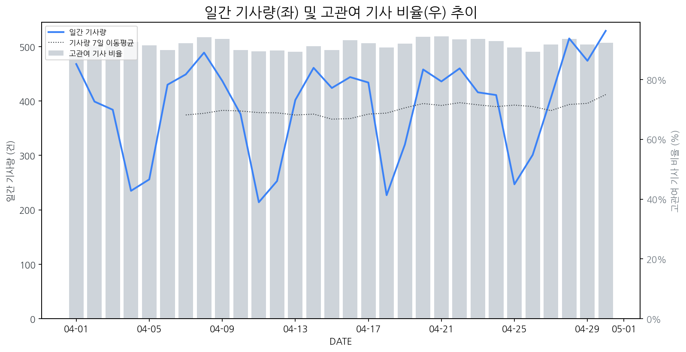

1
시장 활동 지표
기사량 추세 & 이상 징후 탐지
시장의 '전체 기사량'이 평소보다 비정상적으로 급증했는지(Spike)를 차트로 확인하고, LLM이 분석한 급등의 핵심 원인을 파악할 수 있음

고관여 기사란? 산업 연관 키워드로 수집된 기사들 중 디스플레이 키워드에 가중치를 반영하여 도출된 관련성 높은 기사
수집된 기사 수 (2026-04-30)
529
+27% WoW
기사량 변동 수준 (7일 이동평균 대비)
±6.7% 이하
2
오늘의 키워드
급격한 관심 ↑, 주목해야 할 키워드
1
삼성전자
+8.4σ
삼성전자가 1분기 사상 최대 실적을 달성하며 반도체 부문에서 압도적인 성과를 기록했기 때문입니다.
Related Metrics
금일 언급량: 74, 전일 대비: +57
Interpretation
부품 수요 증가 기대
Next Step
핵심 토픽 'Foldable_Display_Topic' 관련 신호입니다. 3번 섹션(키워드 감성분석)에서 해당 토픽의 감성 변동을 교차 확인하세요.
2
마이크로소프트
+3.6σ
마이크로소프트 애저 로컬이 소버린 프라이빗 클라우드 용량을 대폭 확장하며 데이터 센터 수요 증가를 견인했습니다.
Related Metrics
금일 언급량: 9, 전일 대비: +9
Interpretation
서버 수요 증가, 디스플레이 납품 기회
Next Step
핵심 토픽 'Set_Manufacturer' 관련 신호입니다. 3번 섹션(키워드 감성분석)에서 해당 토픽의 감성 변동을 교차 확인하세요.
3
벤큐
+1.9σ
벤큐, 가정의 달 맞이 모니터·마우스 구매 대상 포토후기 이벤트 실시.
Related Metrics
금일 언급량: 4, 전일 대비: +4
Interpretation
계절성 마케팅 효과
Next Step
'벤큐' 관련 상세 기사 및 경쟁사 반응 모니터링
4
아이패드
+1.6σ
애플의 '아이패드 울트라' 프로젝트 중단 및 폴더블 아이패드 개발 축소 소식이 급증의 원인입니다.
Related Metrics
금일 언급량: 4, 전일 대비: +4
Interpretation
대형/폴더블 패널 수요 불확실성 증대
Next Step
'아이패드' 관련 상세 기사 및 경쟁사 반응 모니터링
3
실시간 Risk 키워드
경계해야 할 시그널 탐지
특정 토픽의 부정 감성 점수가 급등할 때 이를 즉시 탐지하고, "근거 기사" 링크를 통해 리스크의 실체를 빠르게 파악할 수 있음
키워드 분석 결과, 오늘은 걱정할 만한 하락 신호가 없습니다. (부정 언급량 변화: +1.5σ 이내)
4
주요 이벤트 모니터링
실시간 산업 동향 파악을 위한 주요 활동
최근 발생한 주요 기업들의 신제품 출시, 투자 등 주요 이벤트를 제공하여 매일 경쟁사 동향을 확인할 수 있음
삼성전자는 2분기에도 메모리 반도체 시장의 호황을 예상하며, 2027년의 예상 주문량이 현재 생산 능력을 초과할 것으로 전망했다. 이에 따라 추가적인 생산 능력 확보를 위한 투자 가능성이 시사된다.
Impact
메모리 시장의 지속적인 호황 전망은 관련 소재 및 부품 시장의 수요 증대를 유발하고, 장기적으로 디스플레이 패널 생산에도 긍정적인 영향을 미칠 수 있다.
Next Step
디스플레이 제조 기업은 메모리 반도체 가격 안정화 및 공급망 안정성을 확보하기 위한 전략을 수립하고, 고부가가치 디스플레이 제품 개발에 집중하여 경쟁 우위를 확보해야 한다.
삼성디스플레이는 IT 기기용 8세대 OLED 패널 신규 양산을 시작하며 하반기 매출 성장을 추진할 계획이다. 이는 IT용 OLED 시장에서의 점유율 확대 및 기술 리더십 강화를 위한 전략으로 풀이된다.
Impact
삼성디스플레이의 IT 8G OLED 신규 양산은 IT용 OLED 시장의 성장을 가속화하고, 관련 부품 및 소재 산업 생태계 전반에 긍정적인 영향을 미칠 것으로 예상된다.
Next Step
타 디스플레이 제조 기업은 IT용 OLED 기술 경쟁력 강화 및 생산 효율성 증대를 위한 선제적 투자를 고려해야 한다.
5월 가정의 달을 맞아 AI 시대에 적합한 고성능 '슬림 게이밍' 노트북 추천 이벤트가 진행됩니다. 이는 디스플레이 시장의 성장 잠재력을 시사합니다.
Impact
AI 및 게이밍 노트북 시장 성장은 고해상도, 고주사율, 빠른 응답 속도를 갖춘 고성능 디스플레이 패널 수요 증가로 이어질 것입니다.
Next Step
차세대 게이밍 노트북에 요구되는 기술 트렌드를 파악하고, 이에 맞는 고성능 디스플레이 패널 개발 및 생산 역량을 강화해야 합니다.
코윈테크는 현대자동차와 81억원 규모의 수소차 물류 로봇 공급 계약을 체결했습니다. 이는 수소차 생산 라인 자동화 및 물류 효율성 증대에 기여할 것으로 예상됩니다.
Impact
자율주행 로봇 기술의 디스플레이 산업 내 물류 자동화 적용 가능성을 시사하며, 향후 디스플레이 제조 공정에서도 유사한 자동화 솔루션 도입이 가속화될 수 있습니다.
Next Step
디스플레이 제조 기업은 자율주행 물류 로봇 기술 동향을 주시하며, 생산 및 물류 공정의 자동화 및 효율성 향상을 위한 잠재적 적용 방안을 검토해야 합니다.
삼성전자의 영업이익이 756% 폭증하며 장중 주가가 23만원을 돌파했다. 이는 반도체 부문의 실적 개선과 더불어 디스플레이 부문의 견조한 성장이 복합적으로 작용한 결과로 분석된다.
Impact
삼성전자의 강력한 실적은 디스플레이 시장 전반의 투자 심리를 고무시키고, 고부가가치 디스플레이 기술 개발 경쟁을 더욱 심화시킬 수 있다.
Next Step
경쟁사의 실적 개선에 발맞춰 차세대 디스플레이 기술 경쟁력 확보 및 원가 절감을 위한 생산 효율성 증대에 집중해야 한다.